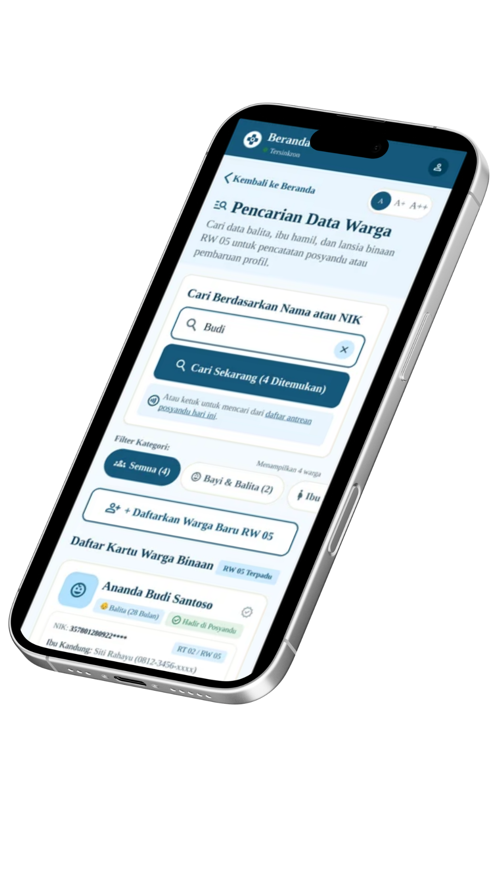
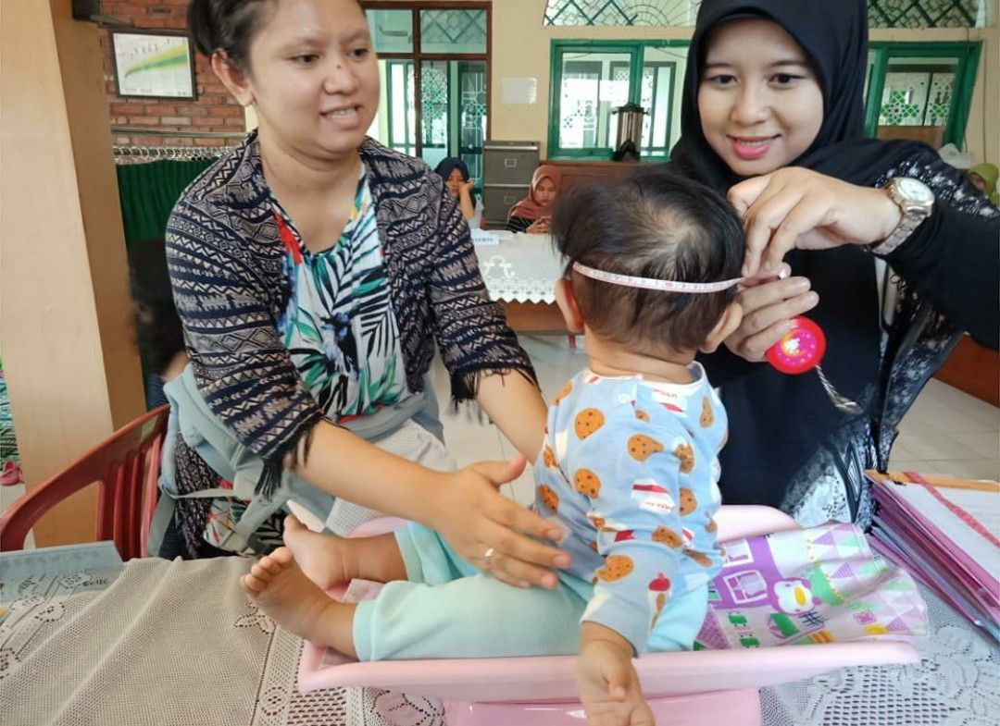
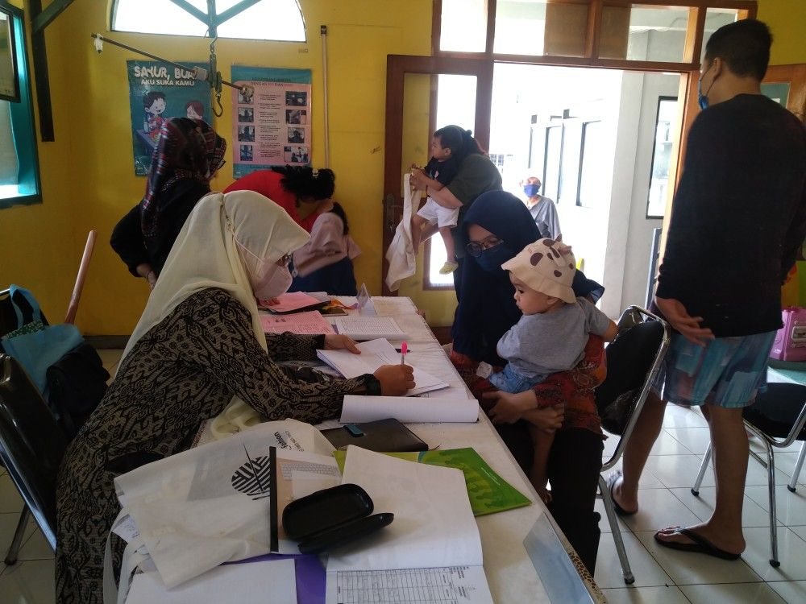
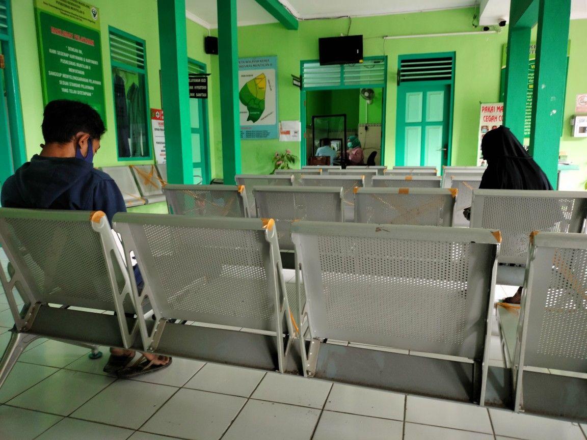
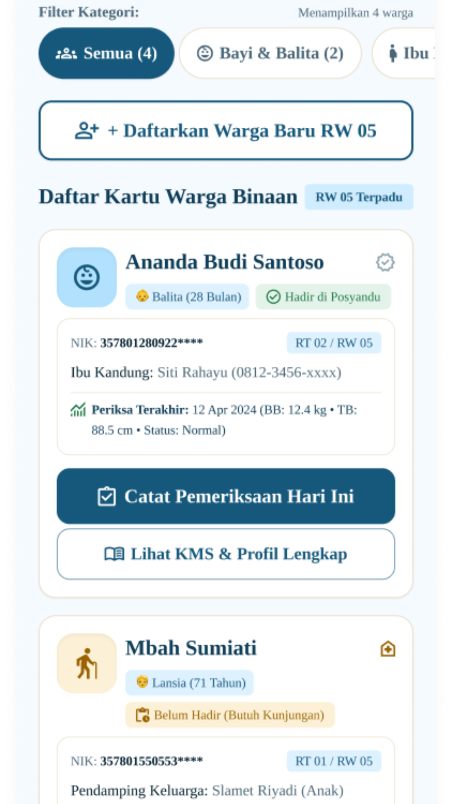
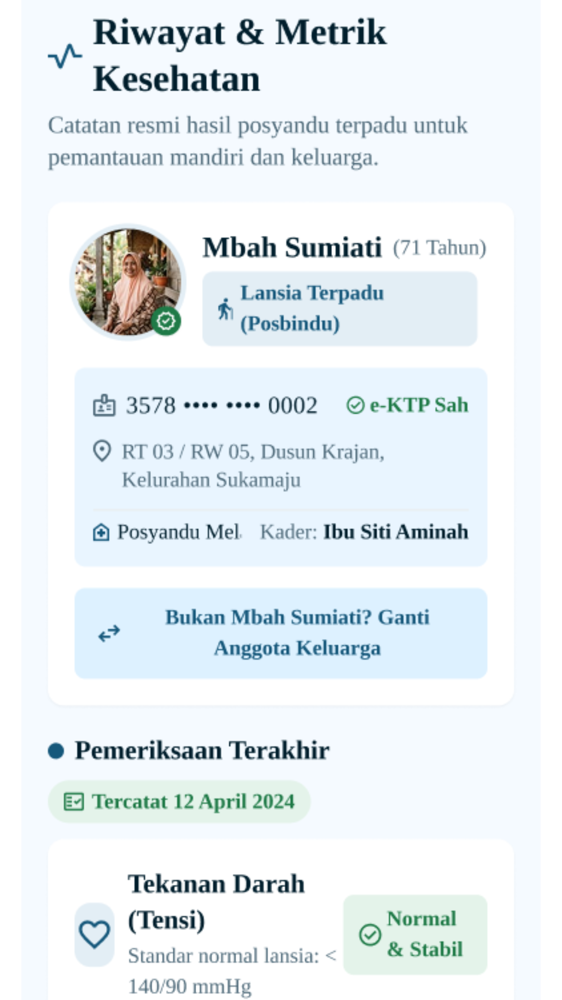
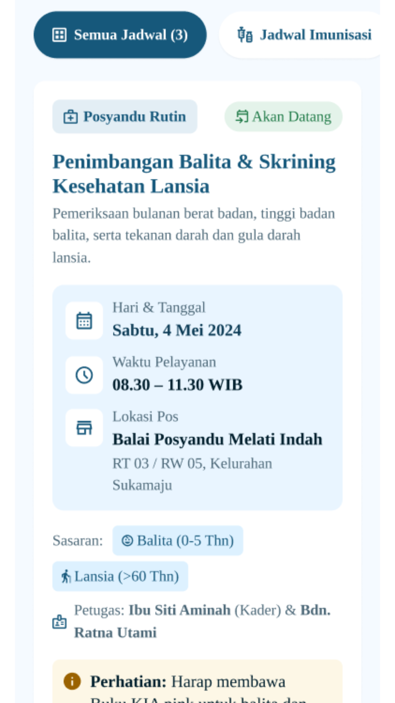

CareLog membantu warga, kader Posyandu, dan Puskesmas mengelola informasi kesehatan secara lebih mudah, terstruktur, dan terintegrasi.

CareLog dirancang untuk membantu proses pencatatan, pemantauan, dan pengelolaan informasi kesehatan Posyandu secara lebih praktis.
Informasi kesehatan lebih mudah dikelola ketika tersimpan secara terpusat.
Validasi membantu mengurangi kesalahan dalam proses pencatatan data.
Data yang terstruktur membantu proses pemantauan dan rekapitulasi.

Memantau informasi kesehatan, riwayat, jadwal Posyandu, dan pengingat.

Membantu pencatatan pemeriksaan dan pengelolaan data warga secara lebih terstruktur.

Melihat rekap dan informasi kesehatan untuk mendukung pemantauan Posyandu.
Melihat informasi kesehatan secara ringkas dan mudah dipahami.
Menyimpan dan melihat perkembangan data kesehatan dari waktu ke waktu.
Mengetahui jadwal kegiatan Posyandu dengan lebih mudah.
Membantu kader mencatat hasil pemeriksaan warga.
Membantu pengguna mengingat jadwal dan informasi penting.
Mendukung proses rekap dan pemantauan informasi Posyandu.
Tampilan dirancang sederhana agar mudah digunakan oleh berbagai kelompok pengguna.



Buat akun CareLog.
Masukkan informasi pengguna.
Akses fitur sesuai kebutuhan.
Lihat informasi kesehatan dengan mudah.
CareLog membantu menghubungkan warga, kader, dan Puskesmas dalam satu sistem.
Mulai Sekarang